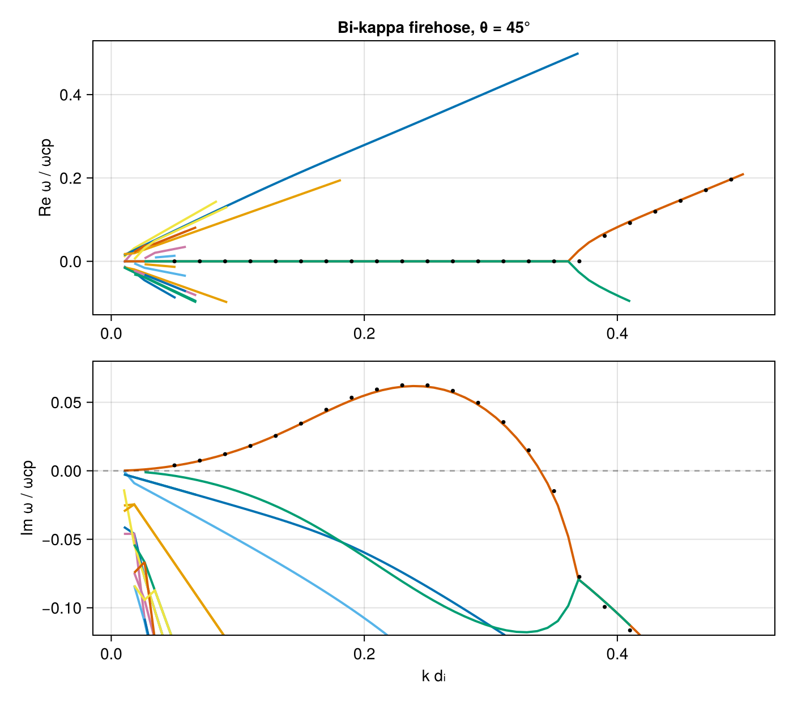
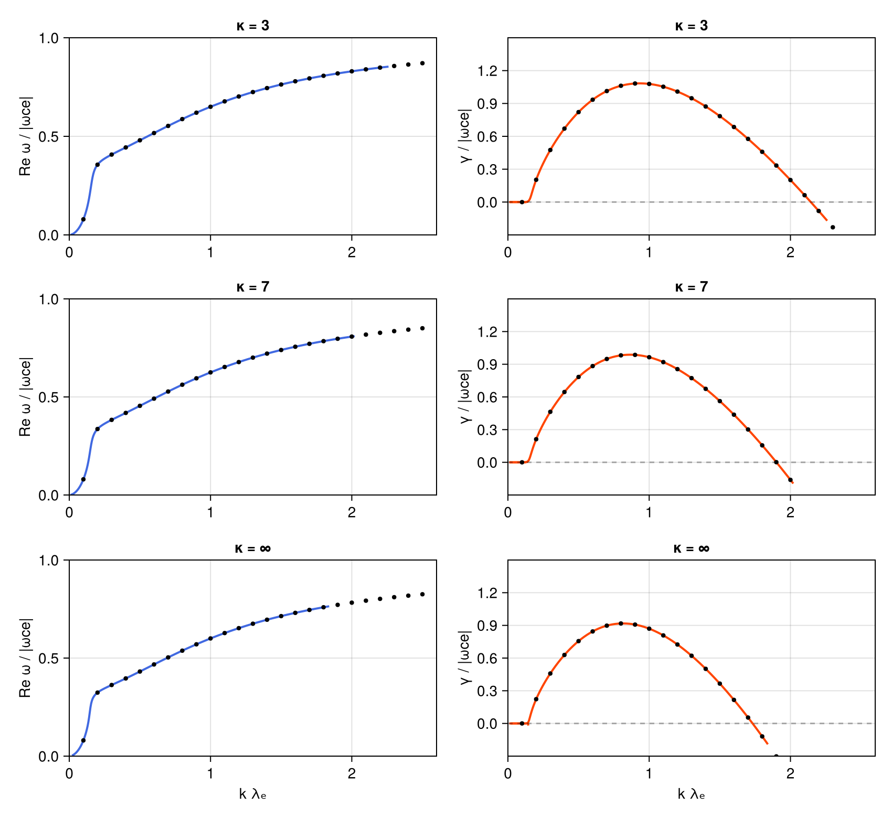

Product bi-kappa instabilities — firehose & whistler
Two benchmarks for VMD's product bi-kappa VDF f ∝ [1 + v∥²/(κc∥²)]^{-(κ+1)}·[1 + v⊥²/(κc⊥²)]^{-(κ+1)}:
- the proton parallel firehose (
T∥ > T⟂), after the PlasmaBO.jl case (Astfalk & Verscharen 2017); - the parallel electron whistler (
T⟂ > T∥), Case 2 of the BO/ALPS solver comparison arXiv:2606.14439 (Guo et al. 2026).
Both map onto VMD's temperature-preserving θ convention, so raw vth = √(2qT/m) reproduces the same distribution as the reference codes.
using VlasovMaxwellDispersion
using DelimitedFiles, Printf
using CairoMakie
const c0 = 2.99792458e8
qe = 1.602176634e-19; mp = 1.67262192369e-27; me = 9.1093837015e-31
eps0 = 8.8541878128e-12; mu0 = 1.25663706212e-61.25663706212e-61. Firehose — bi-kappa protons (Astfalk 2017)
κ = 5.5 product-bi-kappa protons with T∥p = 2 T⟂p (β∥p = 4, β⟂p = 2) plus Maxwellian electrons at θ = 45°, normalized to the proton gyrofrequency ωcp; velocities in units of c.
B0 = 0.1; n = 5.0e19
Te = 496.683; Tpz = 1986.734; Tpp = 993.367; κ = 5.5
wcp = qe * B0 / mp
Pi2p = n * qe^2 / (eps0 * mp) / wcp^2
Pi2e = n * qe^2 / (eps0 * me) / wcp^2
vthpz = sqrt(2qe * Tpz / mp) / c0
vthpp = sqrt(2qe * Tpp / mp) / c0
vthe = sqrt(2qe * Te / me) / c0
vdf_p = ProductBiKappa(vth_para = vthpz, vth_perp = vthpp, kappa_para = κ, kappa_perp = κ)
plasma = (
NormalizedSpecies(1.0, Pi2p, vdf_p),
NormalizedSpecies(-mp / me, Pi2e, Maxwellian(vthe)),
)(NormalizedSpecies{Float64, Separable{Kappa{Float64, Float64}, Kappa{Float64, Float64}}}(1.0, 944537.1834511934, Separable{Kappa{Float64, Float64}, Kappa{Float64, Float64}}(Kappa{Float64, Float64}(9.528475921656928e-6, 5.5), Kappa{Float64, Float64}(2.1174390937015396e-5, 5.5))), NormalizedSpecies{Float64, Separable{Gaussian{Float64, Nothing}, Gaussian{Float64, Float64}}}(-1836.1526734400013, 1.734314474557398e9, Separable{Gaussian{Float64, Nothing}, Gaussian{Float64, Float64}}(Gaussian{Float64, Nothing}(0.04409046120672865, nothing), Gaussian{Float64, Float64}(0.04409046120672865, 0.0))))k is swept over k·dᵢ ∈ [0.01, 0.5] (dᵢ = c/ωpp = vA/ωcp); the ω box straddles the real axis to capture the growing firehose branch together with the damped modes around it.
vA = B0 / sqrt(mu0 * n * mp)
kunit = c0 / vA # k·dᵢ → k c/ωcp
region = (-0.1 - 0.25im, 0.5 + 0.12im)
geom = AngleSweep(k = (0.01, 0.5) .* kunit, theta = deg2rad(45))
sol = solve(GlobalDispersionProblem(plasma, region, geom))19-element SurveySolution{DispersionBranch{Vector{ComplexF64}, Vector{Wavenumber{Float64}}, Vector{Float64}}, SolveStats{Float64}, GlobalDispersionProblem{Tuple{NormalizedSpecies{Float64, Separable{Kappa{Float64, Float64}, Kappa{Float64, Float64}}}, NormalizedSpecies{Float64, Separable{Gaussian{Float64, Nothing}, Gaussian{Float64, Float64}}}}, Tuple{ComplexF64, ComplexF64}, AngleSweep{Tuple{Float64, Float64}, Float64}, HarmonicSum}, AAA{@NamedTuple{stagnation::Int64}}}:
DispersionBranch{Vector{ComplexF64}, Vector{Wavenumber{Float64}}, Vector{Float64}}(ComplexF64[-0.012218506594219303 - 0.04097749910981669im, -0.025929078887286627 - 0.04597700486267777im, -0.04552463245914394 - 0.07797484605963238im, -0.059642200616199036 - 0.10215786070991674im, -0.0737590837575243 - 0.1263416507127858im, -0.08787509962295321 - 0.15052641929614127im, NaN + NaN*im, NaN + NaN*im, NaN + NaN*im, NaN + NaN*im … NaN + NaN*im, NaN + NaN*im, NaN + NaN*im, NaN + NaN*im, NaN + NaN*im, NaN + NaN*im, NaN + NaN*im, NaN + NaN*im, NaN + NaN*im, NaN + NaN*im], Wavenumber{Float64}[Wavenumber{Float64}(6.87218008877515, 6.872180088775152), Wavenumber{Float64}(12.48446049460819, 12.484460494608191), Wavenumber{Float64}(18.09674090044123, 18.09674090044123), Wavenumber{Float64}(23.70902130627427, 23.709021306274273), Wavenumber{Float64}(29.321301712107307, 29.32130171210731), Wavenumber{Float64}(34.93358211794035, 34.933582117940354), Wavenumber{Float64}(40.54586252377339, 40.545862523773394), Wavenumber{Float64}(46.15814292960643, 46.158142929606434), Wavenumber{Float64}(51.77042333543947, 51.770423335439474), Wavenumber{Float64}(57.3827037412725, 57.38270374127251) … Wavenumber{Float64}(293.09848078626015, 293.0984807862602), Wavenumber{Float64}(298.71076119209323, 298.71076119209323), Wavenumber{Float64}(304.3230415979262, 304.32304159792625), Wavenumber{Float64}(309.93532200375927, 309.9353220037593), Wavenumber{Float64}(315.5476024095923, 315.54760240959234), Wavenumber{Float64}(321.15988281542536, 321.1598828154254), Wavenumber{Float64}(326.7721632212584, 326.77216322125844), Wavenumber{Float64}(332.3844436270914, 332.38444362709146), Wavenumber{Float64}(337.9967240329245, 337.99672403292453), Wavenumber{Float64}(343.6090044387575, 343.60900443875755)], [3.800625651836523e-17, 8.809742257416846e-19, 2.005449874403404e-18, 1.8299343952265157e-17, 2.532747238161059e-17, 5.990677502784774e-14, NaN, NaN, NaN, NaN … NaN, NaN, NaN, NaN, NaN, NaN, NaN, NaN, NaN, NaN])
DispersionBranch{Vector{ComplexF64}, Vector{Wavenumber{Float64}}, Vector{Float64}}(ComplexF64[-0.014273899374537026 - 0.02530838735687271im, -0.01948563715208248 - 0.024535937819304778im, -0.028245482935181254 - 0.03556497980034072im, -0.03700561951799437 - 0.04659304747258631im, -0.04576616620485783 - 0.05761982123821083im, -0.05452726697480389 - 0.06864496599754406im, -0.06328909763097344 - 0.07966812539928259im, -0.07205187345637257 - 0.09068891422401743im, -0.08081585700638448 - 0.10170690810166684im, -0.08958136522903994 - 0.11272162958090189im … NaN + NaN*im, NaN + NaN*im, NaN + NaN*im, NaN + NaN*im, NaN + NaN*im, NaN + NaN*im, NaN + NaN*im, NaN + NaN*im, NaN + NaN*im, NaN + NaN*im], Wavenumber{Float64}[Wavenumber{Float64}(6.87218008877515, 6.872180088775152), Wavenumber{Float64}(12.48446049460819, 12.484460494608191), Wavenumber{Float64}(18.09674090044123, 18.09674090044123), Wavenumber{Float64}(23.70902130627427, 23.709021306274273), Wavenumber{Float64}(29.321301712107307, 29.32130171210731), Wavenumber{Float64}(34.93358211794035, 34.933582117940354), Wavenumber{Float64}(40.54586252377339, 40.545862523773394), Wavenumber{Float64}(46.15814292960643, 46.158142929606434), Wavenumber{Float64}(51.77042333543947, 51.770423335439474), Wavenumber{Float64}(57.3827037412725, 57.38270374127251) … Wavenumber{Float64}(293.09848078626015, 293.0984807862602), Wavenumber{Float64}(298.71076119209323, 298.71076119209323), Wavenumber{Float64}(304.3230415979262, 304.32304159792625), Wavenumber{Float64}(309.93532200375927, 309.9353220037593), Wavenumber{Float64}(315.5476024095923, 315.54760240959234), Wavenumber{Float64}(321.15988281542536, 321.1598828154254), Wavenumber{Float64}(326.7721632212584, 326.77216322125844), Wavenumber{Float64}(332.3844436270914, 332.38444362709146), Wavenumber{Float64}(337.9967240329245, 337.99672403292453), Wavenumber{Float64}(343.6090044387575, 343.60900443875755)], [6.9437593731848865e-19, 1.4011104400572455e-17, 2.340957043380709e-18, 6.702120427978541e-18, 4.694517908955722e-18, 1.4995738909918428e-17, 1.6306117461988823e-17, 1.339240410735591e-17, 9.160298961626218e-15, 4.4732781366374255e-15 … NaN, NaN, NaN, NaN, NaN, NaN, NaN, NaN, NaN, NaN])
DispersionBranch{Vector{ComplexF64}, Vector{Wavenumber{Float64}}, Vector{Float64}}(ComplexF64[-0.014698474203577689 - 0.002602527062828229im, -0.02669596033584808 - 0.004728711960821874im, -0.03868247599414537 - 0.00685627936327136im, -0.050652934392963755 - 0.008985878960861074im, -0.06260206348801131 - 0.011118195259321137im, -0.07452432250918221 - 0.01325396700001122im, -0.08641379173927774 - 0.01539402097521341im, -0.09826402563697778 - 0.017539336697610375im, NaN + NaN*im, NaN + NaN*im … NaN + NaN*im, NaN + NaN*im, NaN + NaN*im, NaN + NaN*im, NaN + NaN*im, NaN + NaN*im, NaN + NaN*im, NaN + NaN*im, NaN + NaN*im, NaN + NaN*im], Wavenumber{Float64}[Wavenumber{Float64}(6.87218008877515, 6.872180088775152), Wavenumber{Float64}(12.48446049460819, 12.484460494608191), Wavenumber{Float64}(18.09674090044123, 18.09674090044123), Wavenumber{Float64}(23.70902130627427, 23.709021306274273), Wavenumber{Float64}(29.321301712107307, 29.32130171210731), Wavenumber{Float64}(34.93358211794035, 34.933582117940354), Wavenumber{Float64}(40.54586252377339, 40.545862523773394), Wavenumber{Float64}(46.15814292960643, 46.158142929606434), Wavenumber{Float64}(51.77042333543947, 51.770423335439474), Wavenumber{Float64}(57.3827037412725, 57.38270374127251) … Wavenumber{Float64}(293.09848078626015, 293.0984807862602), Wavenumber{Float64}(298.71076119209323, 298.71076119209323), Wavenumber{Float64}(304.3230415979262, 304.32304159792625), Wavenumber{Float64}(309.93532200375927, 309.9353220037593), Wavenumber{Float64}(315.5476024095923, 315.54760240959234), Wavenumber{Float64}(321.15988281542536, 321.1598828154254), Wavenumber{Float64}(326.7721632212584, 326.77216322125844), Wavenumber{Float64}(332.3844436270914, 332.38444362709146), Wavenumber{Float64}(337.9967240329245, 337.99672403292453), Wavenumber{Float64}(343.6090044387575, 343.60900443875755)], [1.562721937162896e-17, 5.116177485671365e-17, 7.917860252368504e-18, 2.217342631483086e-18, 4.012953408676185e-16, 1.2725987723426754e-16, 4.619811780080934e-17, 3.849970147791954e-17, NaN, NaN … NaN, NaN, NaN, NaN, NaN, NaN, NaN, NaN, NaN, NaN])
DispersionBranch{Vector{ComplexF64}, Vector{Wavenumber{Float64}}, Vector{Float64}}(ComplexF64[-0.002658179425783212 - 0.04604899117205694im, 0.025929078887286534 - 0.045977004862677695im, 0.03217465276420761 - 0.10790712347439267im, 0.04215203867546546 - 0.1413716686084164im, 0.05212874238160164 - 0.1748359486075014im, 0.06210458559875668 - 0.20829989366644572im, 0.07207937961981392 - 0.2417634287911157im, NaN + NaN*im, NaN + NaN*im, NaN + NaN*im … NaN + NaN*im, NaN + NaN*im, NaN + NaN*im, NaN + NaN*im, NaN + NaN*im, NaN + NaN*im, NaN + NaN*im, NaN + NaN*im, NaN + NaN*im, NaN + NaN*im], Wavenumber{Float64}[Wavenumber{Float64}(6.87218008877515, 6.872180088775152), Wavenumber{Float64}(12.48446049460819, 12.484460494608191), Wavenumber{Float64}(18.09674090044123, 18.09674090044123), Wavenumber{Float64}(23.70902130627427, 23.709021306274273), Wavenumber{Float64}(29.321301712107307, 29.32130171210731), Wavenumber{Float64}(34.93358211794035, 34.933582117940354), Wavenumber{Float64}(40.54586252377339, 40.545862523773394), Wavenumber{Float64}(46.15814292960643, 46.158142929606434), Wavenumber{Float64}(51.77042333543947, 51.770423335439474), Wavenumber{Float64}(57.3827037412725, 57.38270374127251) … Wavenumber{Float64}(293.09848078626015, 293.0984807862602), Wavenumber{Float64}(298.71076119209323, 298.71076119209323), Wavenumber{Float64}(304.3230415979262, 304.32304159792625), Wavenumber{Float64}(309.93532200375927, 309.9353220037593), Wavenumber{Float64}(315.5476024095923, 315.54760240959234), Wavenumber{Float64}(321.15988281542536, 321.1598828154254), Wavenumber{Float64}(326.7721632212584, 326.77216322125844), Wavenumber{Float64}(332.3844436270914, 332.38444362709146), Wavenumber{Float64}(337.9967240329245, 337.99672403292453), Wavenumber{Float64}(343.6090044387575, 343.60900443875755)], [1.0516172266956586e-16, 4.650364193053971e-19, 1.7893698875335172e-17, 1.7830981476061145e-16, 2.1194372419489075e-17, 1.8443882260894391e-13, 6.390984210153128e-14, NaN, NaN, NaN … NaN, NaN, NaN, NaN, NaN, NaN, NaN, NaN, NaN, NaN])
DispersionBranch{Vector{ComplexF64}, Vector{Wavenumber{Float64}}, Vector{Float64}}(ComplexF64[-2.176618953623402e-15 - 0.00014545411996063736im, 1.7087810153267832e-16 - 0.009015180437001339im, -1.1805419417111826e-16 - 0.013074289372810416im, -2.408208667780835e-16 - 0.01714057314307721im, -4.772321144383047e-16 - 0.021216437696985276im, -4.599961564864824e-16 - 0.025304443505162973im, -5.313030186499821e-16 - 0.029407349929368925im, -4.7458247796811387e-17 - 0.033528160636804305im, -1.8963432501182887e-17 - 0.037670167697141696im, -7.819733436221706e-16 - 0.04183699188691349im … NaN + NaN*im, NaN + NaN*im, NaN + NaN*im, NaN + NaN*im, NaN + NaN*im, NaN + NaN*im, NaN + NaN*im, NaN + NaN*im, NaN + NaN*im, NaN + NaN*im], Wavenumber{Float64}[Wavenumber{Float64}(6.87218008877515, 6.872180088775152), Wavenumber{Float64}(12.48446049460819, 12.484460494608191), Wavenumber{Float64}(18.09674090044123, 18.09674090044123), Wavenumber{Float64}(23.70902130627427, 23.709021306274273), Wavenumber{Float64}(29.321301712107307, 29.32130171210731), Wavenumber{Float64}(34.93358211794035, 34.933582117940354), Wavenumber{Float64}(40.54586252377339, 40.545862523773394), Wavenumber{Float64}(46.15814292960643, 46.158142929606434), Wavenumber{Float64}(51.77042333543947, 51.770423335439474), Wavenumber{Float64}(57.3827037412725, 57.38270374127251) … Wavenumber{Float64}(293.09848078626015, 293.0984807862602), Wavenumber{Float64}(298.71076119209323, 298.71076119209323), Wavenumber{Float64}(304.3230415979262, 304.32304159792625), Wavenumber{Float64}(309.93532200375927, 309.9353220037593), Wavenumber{Float64}(315.5476024095923, 315.54760240959234), Wavenumber{Float64}(321.15988281542536, 321.1598828154254), Wavenumber{Float64}(326.7721632212584, 326.77216322125844), Wavenumber{Float64}(332.3844436270914, 332.38444362709146), Wavenumber{Float64}(337.9967240329245, 337.99672403292453), Wavenumber{Float64}(343.6090044387575, 343.60900443875755)], [1.1503011512573872e-13, 9.96963376390587e-17, 3.4534270898309444e-17, 2.5834808611679794e-17, 3.3194103376709e-17, 4.1700923499984253e-17, 6.315855567524852e-17, 1.0656919756620643e-16, 9.425646016882174e-17, 1.0714172989449948e-16 … NaN, NaN, NaN, NaN, NaN, NaN, NaN, NaN, NaN, NaN])
DispersionBranch{Vector{ComplexF64}, Vector{Wavenumber{Float64}}, Vector{Float64}}(ComplexF64[-6.376550173690164e-14 + 0.00014545491057928794im, 2.4874469923383474e-15 + 0.0004802905173598053im, -1.243659717975956e-14 + 0.0010099978586619002im, 7.142719286398013e-15 + 0.0017355948371117474im, 5.913351164298553e-15 + 0.002658590371012152im, -8.814003196013602e-16 + 0.0037811023793443243im, 3.349817109383134e-17 + 0.005106007647810218im, -1.3211678489359351e-16 + 0.00663708519920248im, 4.844257985318542e-16 + 0.008379068392106im, 8.231989833984217e-17 + 0.010337474612208668im … 0.11751437173995728 - 0.12794080144798392im, 0.12790587276312765 - 0.1358106193600911im, 0.13818393866547382 - 0.14390328712423392im, 0.14839499103873985 - 0.15221669017632292im, 0.15857459305113236 - 0.1607487623048471im, 0.168750856426698 - 0.1694975244366273im, 0.17894659113009442 - 0.17846113162836308im, 0.18918071510516987 - 0.18763792928616277im, 0.19946921139110882 - 0.19702651828805717im, 0.20982579759110392 - 0.20662582987318692im], Wavenumber{Float64}[Wavenumber{Float64}(6.87218008877515, 6.872180088775152), Wavenumber{Float64}(12.48446049460819, 12.484460494608191), Wavenumber{Float64}(18.09674090044123, 18.09674090044123), Wavenumber{Float64}(23.70902130627427, 23.709021306274273), Wavenumber{Float64}(29.321301712107307, 29.32130171210731), Wavenumber{Float64}(34.93358211794035, 34.933582117940354), Wavenumber{Float64}(40.54586252377339, 40.545862523773394), Wavenumber{Float64}(46.15814292960643, 46.158142929606434), Wavenumber{Float64}(51.77042333543947, 51.770423335439474), Wavenumber{Float64}(57.3827037412725, 57.38270374127251) … Wavenumber{Float64}(293.09848078626015, 293.0984807862602), Wavenumber{Float64}(298.71076119209323, 298.71076119209323), Wavenumber{Float64}(304.3230415979262, 304.32304159792625), Wavenumber{Float64}(309.93532200375927, 309.9353220037593), Wavenumber{Float64}(315.5476024095923, 315.54760240959234), Wavenumber{Float64}(321.15988281542536, 321.1598828154254), Wavenumber{Float64}(326.7721632212584, 326.77216322125844), Wavenumber{Float64}(332.3844436270914, 332.38444362709146), Wavenumber{Float64}(337.9967240329245, 337.99672403292453), Wavenumber{Float64}(343.6090044387575, 343.60900443875755)], [1.7175454799848487e-13, 1.860666846466001e-14, 4.9427848445533114e-14, 1.7203286309285287e-14, 1.2704254734439229e-14, 4.094920562735386e-15, 3.786166817831175e-18, 2.459598229359906e-15, 2.151083457391849e-15, 1.9044183305499818e-15 … 8.861545250449703e-17, 2.8098906295722677e-16, 7.862568489254292e-17, 1.8968992247423035e-16, 6.656007623709158e-17, 1.9335933603983286e-16, 6.734368965207075e-17, 1.5819382463285557e-16, 2.7308128391606987e-16, 4.998347984755546e-17])
DispersionBranch{Vector{ComplexF64}, Vector{Wavenumber{Float64}}, Vector{Float64}}(ComplexF64[0.010725981002571685 - 0.013506230162084968im, 0.03140655077123247 - 0.053792413719260496im, 0.04552463245914395 - 0.07797484605963238im, 0.05964220061619905 - 0.10215786070991674im, 0.07375908375752428 - 0.12634165071278583im, 0.08787509962289441 - 0.15052641929605537im, 0.10199005142214661 - 0.17471238247871895im, 0.11610372315137807 - 0.1988997718262617im, 0.13021587360853512 - 0.22308883741393837im, 0.14432622862132755 - 0.24727985109927508im … NaN + NaN*im, NaN + NaN*im, NaN + NaN*im, NaN + NaN*im, NaN + NaN*im, NaN + NaN*im, NaN + NaN*im, NaN + NaN*im, NaN + NaN*im, NaN + NaN*im], Wavenumber{Float64}[Wavenumber{Float64}(6.87218008877515, 6.872180088775152), Wavenumber{Float64}(12.48446049460819, 12.484460494608191), Wavenumber{Float64}(18.09674090044123, 18.09674090044123), Wavenumber{Float64}(23.70902130627427, 23.709021306274273), Wavenumber{Float64}(29.321301712107307, 29.32130171210731), Wavenumber{Float64}(34.93358211794035, 34.933582117940354), Wavenumber{Float64}(40.54586252377339, 40.545862523773394), Wavenumber{Float64}(46.15814292960643, 46.158142929606434), Wavenumber{Float64}(51.77042333543947, 51.770423335439474), Wavenumber{Float64}(57.3827037412725, 57.38270374127251) … Wavenumber{Float64}(293.09848078626015, 293.0984807862602), Wavenumber{Float64}(298.71076119209323, 298.71076119209323), Wavenumber{Float64}(304.3230415979262, 304.32304159792625), Wavenumber{Float64}(309.93532200375927, 309.9353220037593), Wavenumber{Float64}(315.5476024095923, 315.54760240959234), Wavenumber{Float64}(321.15988281542536, 321.1598828154254), Wavenumber{Float64}(326.7721632212584, 326.77216322125844), Wavenumber{Float64}(332.3844436270914, 332.38444362709146), Wavenumber{Float64}(337.9967240329245, 337.99672403292453), Wavenumber{Float64}(343.6090044387575, 343.60900443875755)], [2.9276588215249913e-18, 2.9765237015396127e-18, 2.8348294039537284e-18, 1.4058227533668167e-17, 8.659388905643143e-18, 5.5219465960211016e-14, 1.927785489789258e-14, 7.698302275287347e-15, 3.3247798101804547e-15, 1.6117434713967776e-15 … NaN, NaN, NaN, NaN, NaN, NaN, NaN, NaN, NaN, NaN])
DispersionBranch{Vector{ComplexF64}, Vector{Wavenumber{Float64}}, Vector{Float64}}(ComplexF64[0.014698474203578985 - 0.002602527062826709im, 0.026695960335855314 - 0.004728711960816796im, 0.038682475994146336 - 0.0068562793632711535im, 0.0506529343929644 - 0.00898587896086087im, 0.06260206348799743 - 0.011118195259265681im, 0.0745243225091783 - 0.013253966999997919im, 0.08641379173927786 - 0.015394020975208148im, 0.09826402563697727 - 0.01753933669760865im, 0.11006786539598702 - 0.0196911703666704im, 0.12181722240057877 - 0.02185127998984097im … NaN + NaN*im, NaN + NaN*im, NaN + NaN*im, NaN + NaN*im, NaN + NaN*im, NaN + NaN*im, NaN + NaN*im, NaN + NaN*im, NaN + NaN*im, NaN + NaN*im], Wavenumber{Float64}[Wavenumber{Float64}(6.87218008877515, 6.872180088775152), Wavenumber{Float64}(12.48446049460819, 12.484460494608191), Wavenumber{Float64}(18.09674090044123, 18.09674090044123), Wavenumber{Float64}(23.70902130627427, 23.709021306274273), Wavenumber{Float64}(29.321301712107307, 29.32130171210731), Wavenumber{Float64}(34.93358211794035, 34.933582117940354), Wavenumber{Float64}(40.54586252377339, 40.545862523773394), Wavenumber{Float64}(46.15814292960643, 46.158142929606434), Wavenumber{Float64}(51.77042333543947, 51.770423335439474), Wavenumber{Float64}(57.3827037412725, 57.38270374127251) … Wavenumber{Float64}(293.09848078626015, 293.0984807862602), Wavenumber{Float64}(298.71076119209323, 298.71076119209323), Wavenumber{Float64}(304.3230415979262, 304.32304159792625), Wavenumber{Float64}(309.93532200375927, 309.9353220037593), Wavenumber{Float64}(315.5476024095923, 315.54760240959234), Wavenumber{Float64}(321.15988281542536, 321.1598828154254), Wavenumber{Float64}(326.7721632212584, 326.77216322125844), Wavenumber{Float64}(332.3844436270914, 332.38444362709146), Wavenumber{Float64}(337.9967240329245, 337.99672403292453), Wavenumber{Float64}(343.6090044387575, 343.60900443875755)], [8.69791657761024e-18, 1.3136281129520383e-17, 1.0005402613527563e-17, 6.249328859980031e-18, 4.0107234039769466e-16, 1.1235375878798883e-16, 4.51737394899997e-17, 4.9718853065323265e-17, 3.06123801579523e-17, 1.0511786144783832e-17 … NaN, NaN, NaN, NaN, NaN, NaN, NaN, NaN, NaN, NaN])
DispersionBranch{Vector{ComplexF64}, Vector{Wavenumber{Float64}}, Vector{Float64}}(ComplexF64[0.01728811935541401 - 0.029610378330420635im, 0.01948563715208258 - 0.024535937819304816im, 0.02824548293518116 - 0.035564979800340735im, 0.037005619517994325 - 0.0465930474725863im, 0.04576616620485796 - 0.057619821238210835im, 0.054527266974803965 - 0.06864496599754406im, 0.06328909763097354 - 0.07966812539928257im, 0.07205187345637253 - 0.09068891422401743im, 0.08081585700643815 - 0.10170690810160547im, 0.08958136522906368 - 0.11272162958087502im … NaN + NaN*im, NaN + NaN*im, NaN + NaN*im, NaN + NaN*im, NaN + NaN*im, NaN + NaN*im, NaN + NaN*im, NaN + NaN*im, NaN + NaN*im, NaN + NaN*im], Wavenumber{Float64}[Wavenumber{Float64}(6.87218008877515, 6.872180088775152), Wavenumber{Float64}(12.48446049460819, 12.484460494608191), Wavenumber{Float64}(18.09674090044123, 18.09674090044123), Wavenumber{Float64}(23.70902130627427, 23.709021306274273), Wavenumber{Float64}(29.321301712107307, 29.32130171210731), Wavenumber{Float64}(34.93358211794035, 34.933582117940354), Wavenumber{Float64}(40.54586252377339, 40.545862523773394), Wavenumber{Float64}(46.15814292960643, 46.158142929606434), Wavenumber{Float64}(51.77042333543947, 51.770423335439474), Wavenumber{Float64}(57.3827037412725, 57.38270374127251) … Wavenumber{Float64}(293.09848078626015, 293.0984807862602), Wavenumber{Float64}(298.71076119209323, 298.71076119209323), Wavenumber{Float64}(304.3230415979262, 304.32304159792625), Wavenumber{Float64}(309.93532200375927, 309.9353220037593), Wavenumber{Float64}(315.5476024095923, 315.54760240959234), Wavenumber{Float64}(321.15988281542536, 321.1598828154254), Wavenumber{Float64}(326.7721632212584, 326.77216322125844), Wavenumber{Float64}(332.3844436270914, 332.38444362709146), Wavenumber{Float64}(337.9967240329245, 337.99672403292453), Wavenumber{Float64}(343.6090044387575, 343.60900443875755)], [2.165371677449324e-17, 8.209041442640474e-18, 5.9327308476255076e-18, 1.0588749658894095e-17, 1.302451281469396e-17, 5.503064948095982e-18, 3.9233122709364594e-17, 2.610964015473783e-17, 8.982500222239374e-15, 4.345354962345144e-15 … NaN, NaN, NaN, NaN, NaN, NaN, NaN, NaN, NaN, NaN])
DispersionBranch{Vector{ComplexF64}, Vector{Wavenumber{Float64}}, Vector{Float64}}(ComplexF64[NaN + NaN*im, -0.03140655077123246 - 0.05379241371926047im, -0.0375810552346386 - 0.06664578892450587im, -0.04922837671321464 - 0.08731479271068307im, -0.060869578264760464 - 0.10798404415220728im, -0.0725031765989111 - 0.12865353590242187im, -0.08412766453659039 - 0.14932321325070905im, -0.09574150407716098 - 0.1699929592065433im, NaN + NaN*im, NaN + NaN*im … NaN + NaN*im, NaN + NaN*im, NaN + NaN*im, NaN + NaN*im, NaN + NaN*im, NaN + NaN*im, NaN + NaN*im, NaN + NaN*im, NaN + NaN*im, NaN + NaN*im], Wavenumber{Float64}[Wavenumber{Float64}(6.87218008877515, 6.872180088775152), Wavenumber{Float64}(12.48446049460819, 12.484460494608191), Wavenumber{Float64}(18.09674090044123, 18.09674090044123), Wavenumber{Float64}(23.70902130627427, 23.709021306274273), Wavenumber{Float64}(29.321301712107307, 29.32130171210731), Wavenumber{Float64}(34.93358211794035, 34.933582117940354), Wavenumber{Float64}(40.54586252377339, 40.545862523773394), Wavenumber{Float64}(46.15814292960643, 46.158142929606434), Wavenumber{Float64}(51.77042333543947, 51.770423335439474), Wavenumber{Float64}(57.3827037412725, 57.38270374127251) … Wavenumber{Float64}(293.09848078626015, 293.0984807862602), Wavenumber{Float64}(298.71076119209323, 298.71076119209323), Wavenumber{Float64}(304.3230415979262, 304.32304159792625), Wavenumber{Float64}(309.93532200375927, 309.9353220037593), Wavenumber{Float64}(315.5476024095923, 315.54760240959234), Wavenumber{Float64}(321.15988281542536, 321.1598828154254), Wavenumber{Float64}(326.7721632212584, 326.77216322125844), Wavenumber{Float64}(332.3844436270914, 332.38444362709146), Wavenumber{Float64}(337.9967240329245, 337.99672403292453), Wavenumber{Float64}(343.6090044387575, 343.60900443875755)], [NaN, 1.278584597543293e-17, 8.42424995937925e-18, 5.386908744417436e-19, 2.677879840819616e-19, 2.2646326847886103e-18, 1.3097580633980381e-18, 1.7300577951358292e-19, NaN, NaN … NaN, NaN, NaN, NaN, NaN, NaN, NaN, NaN, NaN, NaN])
DispersionBranch{Vector{ComplexF64}, Vector{Wavenumber{Float64}}, Vector{Float64}}(ComplexF64[NaN + NaN*im, -0.022196754367092775 - 0.0744423792022309im, -0.03204760758716153 - 0.09421014654774693im, -0.041981878246820405 - 0.12342452693406836im, -0.051912528141581954 - 0.15263671138576332im, -0.06183874881397696 - 0.18184614595895351im, -0.07175976538695869 - 0.2110522551710363im, -0.08167484576366033 - 0.2402544380841706im, NaN + NaN*im, NaN + NaN*im … NaN + NaN*im, NaN + NaN*im, NaN + NaN*im, NaN + NaN*im, NaN + NaN*im, NaN + NaN*im, NaN + NaN*im, NaN + NaN*im, NaN + NaN*im, NaN + NaN*im], Wavenumber{Float64}[Wavenumber{Float64}(6.87218008877515, 6.872180088775152), Wavenumber{Float64}(12.48446049460819, 12.484460494608191), Wavenumber{Float64}(18.09674090044123, 18.09674090044123), Wavenumber{Float64}(23.70902130627427, 23.709021306274273), Wavenumber{Float64}(29.321301712107307, 29.32130171210731), Wavenumber{Float64}(34.93358211794035, 34.933582117940354), Wavenumber{Float64}(40.54586252377339, 40.545862523773394), Wavenumber{Float64}(46.15814292960643, 46.158142929606434), Wavenumber{Float64}(51.77042333543947, 51.770423335439474), Wavenumber{Float64}(57.3827037412725, 57.38270374127251) … Wavenumber{Float64}(293.09848078626015, 293.0984807862602), Wavenumber{Float64}(298.71076119209323, 298.71076119209323), Wavenumber{Float64}(304.3230415979262, 304.32304159792625), Wavenumber{Float64}(309.93532200375927, 309.9353220037593), Wavenumber{Float64}(315.5476024095923, 315.54760240959234), Wavenumber{Float64}(321.15988281542536, 321.1598828154254), Wavenumber{Float64}(326.7721632212584, 326.77216322125844), Wavenumber{Float64}(332.3844436270914, 332.38444362709146), Wavenumber{Float64}(337.9967240329245, 337.99672403292453), Wavenumber{Float64}(343.6090044387575, 343.60900443875755)], [NaN, 2.1682036414592893e-17, 3.1591419782433905e-19, 1.2124833419063226e-17, 4.557328919172777e-19, 2.6665309556713654e-19, 3.7486659671827844e-19, 3.677453030097798e-19, NaN, NaN … NaN, NaN, NaN, NaN, NaN, NaN, NaN, NaN, NaN, NaN])
DispersionBranch{Vector{ComplexF64}, Vector{Wavenumber{Float64}}, Vector{Float64}}(ComplexF64[NaN + NaN*im, -0.004828981553171959 - 0.08365547954148495im, -0.015621148506411492 - 0.110047593544127im, -0.020463717598371494 - 0.14417215029562763im, -0.02530474211233038 - 0.17829341123797054im, -0.030143900754414057 - 0.21241063077692465im, -0.03498090003774195 - 0.24652308623905148im, NaN + NaN*im, NaN + NaN*im, NaN + NaN*im … NaN + NaN*im, NaN + NaN*im, NaN + NaN*im, NaN + NaN*im, NaN + NaN*im, NaN + NaN*im, NaN + NaN*im, NaN + NaN*im, NaN + NaN*im, NaN + NaN*im], Wavenumber{Float64}[Wavenumber{Float64}(6.87218008877515, 6.872180088775152), Wavenumber{Float64}(12.48446049460819, 12.484460494608191), Wavenumber{Float64}(18.09674090044123, 18.09674090044123), Wavenumber{Float64}(23.70902130627427, 23.709021306274273), Wavenumber{Float64}(29.321301712107307, 29.32130171210731), Wavenumber{Float64}(34.93358211794035, 34.933582117940354), Wavenumber{Float64}(40.54586252377339, 40.545862523773394), Wavenumber{Float64}(46.15814292960643, 46.158142929606434), Wavenumber{Float64}(51.77042333543947, 51.770423335439474), Wavenumber{Float64}(57.3827037412725, 57.38270374127251) … Wavenumber{Float64}(293.09848078626015, 293.0984807862602), Wavenumber{Float64}(298.71076119209323, 298.71076119209323), Wavenumber{Float64}(304.3230415979262, 304.32304159792625), Wavenumber{Float64}(309.93532200375927, 309.9353220037593), Wavenumber{Float64}(315.5476024095923, 315.54760240959234), Wavenumber{Float64}(321.15988281542536, 321.1598828154254), Wavenumber{Float64}(326.7721632212584, 326.77216322125844), Wavenumber{Float64}(332.3844436270914, 332.38444362709146), Wavenumber{Float64}(337.9967240329245, 337.99672403292453), Wavenumber{Float64}(343.6090044387575, 343.60900443875755)], [NaN, 1.2093769364810138e-17, 9.370729805871752e-20, 1.650488706805901e-19, 3.770860862339732e-18, 1.4644494376806854e-19, 1.9751579853209673e-19, NaN, NaN, NaN … NaN, NaN, NaN, NaN, NaN, NaN, NaN, NaN, NaN, NaN])
DispersionBranch{Vector{ComplexF64}, Vector{Wavenumber{Float64}}, Vector{Float64}}(ComplexF64[NaN + NaN*im, 0.022196754367092248 - 0.0744423792022296im, 0.03758105523463895 - 0.06664578892450537im, 0.04198187824682117 - 0.12342452693406789im, 0.05191252814158198 - 0.15263671138576335im, 0.06183874881397692 - 0.18184614595895351im, 0.07175976538695866 - 0.21105225517103626im, 0.08167484576366034 - 0.24025443808417063im, NaN + NaN*im, NaN + NaN*im … NaN + NaN*im, NaN + NaN*im, NaN + NaN*im, NaN + NaN*im, NaN + NaN*im, NaN + NaN*im, NaN + NaN*im, NaN + NaN*im, NaN + NaN*im, NaN + NaN*im], Wavenumber{Float64}[Wavenumber{Float64}(6.87218008877515, 6.872180088775152), Wavenumber{Float64}(12.48446049460819, 12.484460494608191), Wavenumber{Float64}(18.09674090044123, 18.09674090044123), Wavenumber{Float64}(23.70902130627427, 23.709021306274273), Wavenumber{Float64}(29.321301712107307, 29.32130171210731), Wavenumber{Float64}(34.93358211794035, 34.933582117940354), Wavenumber{Float64}(40.54586252377339, 40.545862523773394), Wavenumber{Float64}(46.15814292960643, 46.158142929606434), Wavenumber{Float64}(51.77042333543947, 51.770423335439474), Wavenumber{Float64}(57.3827037412725, 57.38270374127251) … Wavenumber{Float64}(293.09848078626015, 293.0984807862602), Wavenumber{Float64}(298.71076119209323, 298.71076119209323), Wavenumber{Float64}(304.3230415979262, 304.32304159792625), Wavenumber{Float64}(309.93532200375927, 309.9353220037593), Wavenumber{Float64}(315.5476024095923, 315.54760240959234), Wavenumber{Float64}(321.15988281542536, 321.1598828154254), Wavenumber{Float64}(326.7721632212584, 326.77216322125844), Wavenumber{Float64}(332.3844436270914, 332.38444362709146), Wavenumber{Float64}(337.9967240329245, 337.99672403292453), Wavenumber{Float64}(343.6090044387575, 343.60900443875755)], [NaN, 1.4201910639576167e-15, 5.985105751437468e-18, 7.203134582171475e-18, 3.0389266468976836e-19, 3.547276236742851e-19, 3.8177018021329574e-19, 2.2323113881202896e-19, NaN, NaN … NaN, NaN, NaN, NaN, NaN, NaN, NaN, NaN, NaN, NaN])
DispersionBranch{Vector{ComplexF64}, Vector{Wavenumber{Float64}}, Vector{Float64}}(ComplexF64[NaN + NaN*im, 0.0048289815531719574 - 0.08365547954148495im, 0.03204760758716152 - 0.09421014654774687im, 0.04922837671321457 - 0.08731479271068306im, 0.06086957826476052 - 0.10798404415220728im, 0.0725031765989112 - 0.12865353590242196im, 0.08412766453659035 - 0.149323213250709im, 0.09574150407716095 - 0.16999295920654328im, 0.1073431174917606 - 0.19066257576109366im, 0.11893087523084331 - 0.21133176015257057im … NaN + NaN*im, NaN + NaN*im, NaN + NaN*im, NaN + NaN*im, NaN + NaN*im, NaN + NaN*im, NaN + NaN*im, NaN + NaN*im, NaN + NaN*im, NaN + NaN*im], Wavenumber{Float64}[Wavenumber{Float64}(6.87218008877515, 6.872180088775152), Wavenumber{Float64}(12.48446049460819, 12.484460494608191), Wavenumber{Float64}(18.09674090044123, 18.09674090044123), Wavenumber{Float64}(23.70902130627427, 23.709021306274273), Wavenumber{Float64}(29.321301712107307, 29.32130171210731), Wavenumber{Float64}(34.93358211794035, 34.933582117940354), Wavenumber{Float64}(40.54586252377339, 40.545862523773394), Wavenumber{Float64}(46.15814292960643, 46.158142929606434), Wavenumber{Float64}(51.77042333543947, 51.770423335439474), Wavenumber{Float64}(57.3827037412725, 57.38270374127251) … Wavenumber{Float64}(293.09848078626015, 293.0984807862602), Wavenumber{Float64}(298.71076119209323, 298.71076119209323), Wavenumber{Float64}(304.3230415979262, 304.32304159792625), Wavenumber{Float64}(309.93532200375927, 309.9353220037593), Wavenumber{Float64}(315.5476024095923, 315.54760240959234), Wavenumber{Float64}(321.15988281542536, 321.1598828154254), Wavenumber{Float64}(326.7721632212584, 326.77216322125844), Wavenumber{Float64}(332.3844436270914, 332.38444362709146), Wavenumber{Float64}(337.9967240329245, 337.99672403292453), Wavenumber{Float64}(343.6090044387575, 343.60900443875755)], [NaN, 1.2099327736910107e-17, 3.7708638442877355e-19, 2.7332138490746245e-19, 6.515835714141813e-19, 1.0985252866796605e-18, 4.071229570070544e-19, 3.911437708382802e-19, 9.000678543860806e-19, 1.06373079286252e-18 … NaN, NaN, NaN, NaN, NaN, NaN, NaN, NaN, NaN, NaN])
DispersionBranch{Vector{ComplexF64}, Vector{Wavenumber{Float64}}, Vector{Float64}}(ComplexF64[NaN + NaN*im, NaN + NaN*im, -0.03217465276420762 - 0.10790712347439266im, -0.042152038675465346 - 0.14137166860841646im, -0.052128742381601624 - 0.1748359486075014im, -0.062104585598870915 - 0.20829989366636625im, -0.07207937961984737 - 0.24176342879109067im, NaN + NaN*im, NaN + NaN*im, NaN + NaN*im … NaN + NaN*im, NaN + NaN*im, NaN + NaN*im, NaN + NaN*im, NaN + NaN*im, NaN + NaN*im, NaN + NaN*im, NaN + NaN*im, NaN + NaN*im, NaN + NaN*im], Wavenumber{Float64}[Wavenumber{Float64}(6.87218008877515, 6.872180088775152), Wavenumber{Float64}(12.48446049460819, 12.484460494608191), Wavenumber{Float64}(18.09674090044123, 18.09674090044123), Wavenumber{Float64}(23.70902130627427, 23.709021306274273), Wavenumber{Float64}(29.321301712107307, 29.32130171210731), Wavenumber{Float64}(34.93358211794035, 34.933582117940354), Wavenumber{Float64}(40.54586252377339, 40.545862523773394), Wavenumber{Float64}(46.15814292960643, 46.158142929606434), Wavenumber{Float64}(51.77042333543947, 51.770423335439474), Wavenumber{Float64}(57.3827037412725, 57.38270374127251) … Wavenumber{Float64}(293.09848078626015, 293.0984807862602), Wavenumber{Float64}(298.71076119209323, 298.71076119209323), Wavenumber{Float64}(304.3230415979262, 304.32304159792625), Wavenumber{Float64}(309.93532200375927, 309.9353220037593), Wavenumber{Float64}(315.5476024095923, 315.54760240959234), Wavenumber{Float64}(321.15988281542536, 321.1598828154254), Wavenumber{Float64}(326.7721632212584, 326.77216322125844), Wavenumber{Float64}(332.3844436270914, 332.38444362709146), Wavenumber{Float64}(337.9967240329245, 337.99672403292453), Wavenumber{Float64}(343.6090044387575, 343.60900443875755)], [NaN, NaN, 1.5142801330380513e-17, 7.50753896397574e-17, 2.3941184683527974e-17, 2.0076986290330874e-13, 6.851793093198099e-14, NaN, NaN, NaN … NaN, NaN, NaN, NaN, NaN, NaN, NaN, NaN, NaN, NaN])
DispersionBranch{Vector{ComplexF64}, Vector{Wavenumber{Float64}}, Vector{Float64}}(ComplexF64[NaN + NaN*im, NaN + NaN*im, -0.006999705823317457 - 0.12126163877949812im, -0.00917031588889106 - 0.15886731532944462im, -0.01134077398394256 - 0.19647234955577172im, -0.013511040584782414 - 0.23407657399511542im, NaN + NaN*im, NaN + NaN*im, NaN + NaN*im, NaN + NaN*im … NaN + NaN*im, NaN + NaN*im, NaN + NaN*im, NaN + NaN*im, NaN + NaN*im, NaN + NaN*im, NaN + NaN*im, NaN + NaN*im, NaN + NaN*im, NaN + NaN*im], Wavenumber{Float64}[Wavenumber{Float64}(6.87218008877515, 6.872180088775152), Wavenumber{Float64}(12.48446049460819, 12.484460494608191), Wavenumber{Float64}(18.09674090044123, 18.09674090044123), Wavenumber{Float64}(23.70902130627427, 23.709021306274273), Wavenumber{Float64}(29.321301712107307, 29.32130171210731), Wavenumber{Float64}(34.93358211794035, 34.933582117940354), Wavenumber{Float64}(40.54586252377339, 40.545862523773394), Wavenumber{Float64}(46.15814292960643, 46.158142929606434), Wavenumber{Float64}(51.77042333543947, 51.770423335439474), Wavenumber{Float64}(57.3827037412725, 57.38270374127251) … Wavenumber{Float64}(293.09848078626015, 293.0984807862602), Wavenumber{Float64}(298.71076119209323, 298.71076119209323), Wavenumber{Float64}(304.3230415979262, 304.32304159792625), Wavenumber{Float64}(309.93532200375927, 309.9353220037593), Wavenumber{Float64}(315.5476024095923, 315.54760240959234), Wavenumber{Float64}(321.15988281542536, 321.1598828154254), Wavenumber{Float64}(326.7721632212584, 326.77216322125844), Wavenumber{Float64}(332.3844436270914, 332.38444362709146), Wavenumber{Float64}(337.9967240329245, 337.99672403292453), Wavenumber{Float64}(343.6090044387575, 343.60900443875755)], [NaN, NaN, 7.756600134792887e-16, 2.849836615206126e-17, 4.8242025277502464e-17, 2.994519084222749e-17, NaN, NaN, NaN, NaN … NaN, NaN, NaN, NaN, NaN, NaN, NaN, NaN, NaN, NaN])
DispersionBranch{Vector{ComplexF64}, Vector{Wavenumber{Float64}}, Vector{Float64}}(ComplexF64[NaN + NaN*im, NaN + NaN*im, -6.076255287660145e-15 - 0.0010098964357803516im, 4.184789452854706e-15 - 0.0017351988374656683im, 2.733547008975852e-15 - 0.0026574287207454393im, 8.319972206364386e-16 - 0.0037782718650169714im, 1.0662751850129844e-15 - 0.005099964422762883im, -4.930305847901401e-16 - 0.006625433140508186im, -1.2792936625413687e-15 - 0.008358433625627616im, -1.0646591575734366e-15 - 0.010303636002964352im … NaN + NaN*im, NaN + NaN*im, NaN + NaN*im, NaN + NaN*im, NaN + NaN*im, NaN + NaN*im, NaN + NaN*im, NaN + NaN*im, NaN + NaN*im, NaN + NaN*im], Wavenumber{Float64}[Wavenumber{Float64}(6.87218008877515, 6.872180088775152), Wavenumber{Float64}(12.48446049460819, 12.484460494608191), Wavenumber{Float64}(18.09674090044123, 18.09674090044123), Wavenumber{Float64}(23.70902130627427, 23.709021306274273), Wavenumber{Float64}(29.321301712107307, 29.32130171210731), Wavenumber{Float64}(34.93358211794035, 34.933582117940354), Wavenumber{Float64}(40.54586252377339, 40.545862523773394), Wavenumber{Float64}(46.15814292960643, 46.158142929606434), Wavenumber{Float64}(51.77042333543947, 51.770423335439474), Wavenumber{Float64}(57.3827037412725, 57.38270374127251) … Wavenumber{Float64}(293.09848078626015, 293.0984807862602), Wavenumber{Float64}(298.71076119209323, 298.71076119209323), Wavenumber{Float64}(304.3230415979262, 304.32304159792625), Wavenumber{Float64}(309.93532200375927, 309.9353220037593), Wavenumber{Float64}(315.5476024095923, 315.54760240959234), Wavenumber{Float64}(321.15988281542536, 321.1598828154254), Wavenumber{Float64}(326.7721632212584, 326.77216322125844), Wavenumber{Float64}(332.3844436270914, 332.38444362709146), Wavenumber{Float64}(337.9967240329245, 337.99672403292453), Wavenumber{Float64}(343.6090044387575, 343.60900443875755)], [NaN, NaN, 1.7668268983103033e-14, 4.1619997337942074e-15, 1.9142307690717905e-14, 3.9088346556492885e-15, 9.990161797286114e-15, 3.855486825245042e-15, 6.301286171028321e-15, 3.718861224416558e-15 … NaN, NaN, NaN, NaN, NaN, NaN, NaN, NaN, NaN, NaN])
DispersionBranch{Vector{ComplexF64}, Vector{Wavenumber{Float64}}, Vector{Float64}}(ComplexF64[NaN + NaN*im, NaN + NaN*im, 0.006999705823317508 - 0.12126163877949774im, 0.020463717598371484 - 0.14417215029562758im, 0.025304742112330292 - 0.17829341123797074im, 0.030143900754414074 - 0.21241063077692465im, 0.03498090003774195 - 0.24652308623905145im, NaN + NaN*im, NaN + NaN*im, NaN + NaN*im … NaN + NaN*im, NaN + NaN*im, NaN + NaN*im, NaN + NaN*im, NaN + NaN*im, NaN + NaN*im, NaN + NaN*im, NaN + NaN*im, NaN + NaN*im, NaN + NaN*im], Wavenumber{Float64}[Wavenumber{Float64}(6.87218008877515, 6.872180088775152), Wavenumber{Float64}(12.48446049460819, 12.484460494608191), Wavenumber{Float64}(18.09674090044123, 18.09674090044123), Wavenumber{Float64}(23.70902130627427, 23.709021306274273), Wavenumber{Float64}(29.321301712107307, 29.32130171210731), Wavenumber{Float64}(34.93358211794035, 34.933582117940354), Wavenumber{Float64}(40.54586252377339, 40.545862523773394), Wavenumber{Float64}(46.15814292960643, 46.158142929606434), Wavenumber{Float64}(51.77042333543947, 51.770423335439474), Wavenumber{Float64}(57.3827037412725, 57.38270374127251) … Wavenumber{Float64}(293.09848078626015, 293.0984807862602), Wavenumber{Float64}(298.71076119209323, 298.71076119209323), Wavenumber{Float64}(304.3230415979262, 304.32304159792625), Wavenumber{Float64}(309.93532200375927, 309.9353220037593), Wavenumber{Float64}(315.5476024095923, 315.54760240959234), Wavenumber{Float64}(321.15988281542536, 321.1598828154254), Wavenumber{Float64}(326.7721632212584, 326.77216322125844), Wavenumber{Float64}(332.3844436270914, 332.38444362709146), Wavenumber{Float64}(337.9967240329245, 337.99672403292453), Wavenumber{Float64}(343.6090044387575, 343.60900443875755)], [NaN, NaN, 2.3619431694571416e-17, 3.8996390453745336e-19, 3.736981505280224e-18, 5.978541122638786e-20, 1.572471254654311e-19, NaN, NaN, NaN … NaN, NaN, NaN, NaN, NaN, NaN, NaN, NaN, NaN, NaN])
DispersionBranch{Vector{ComplexF64}, Vector{Wavenumber{Float64}}, Vector{Float64}}(ComplexF64[NaN + NaN*im, NaN + NaN*im, NaN + NaN*im, 0.009170315888891051 - 0.15886731532944462im, 0.011340773983942561 - 0.19647234955577172im, 0.013511040584782107 - 0.23407657399511567im, NaN + NaN*im, NaN + NaN*im, NaN + NaN*im, NaN + NaN*im … NaN + NaN*im, NaN + NaN*im, NaN + NaN*im, NaN + NaN*im, NaN + NaN*im, NaN + NaN*im, NaN + NaN*im, NaN + NaN*im, NaN + NaN*im, NaN + NaN*im], Wavenumber{Float64}[Wavenumber{Float64}(6.87218008877515, 6.872180088775152), Wavenumber{Float64}(12.48446049460819, 12.484460494608191), Wavenumber{Float64}(18.09674090044123, 18.09674090044123), Wavenumber{Float64}(23.70902130627427, 23.709021306274273), Wavenumber{Float64}(29.321301712107307, 29.32130171210731), Wavenumber{Float64}(34.93358211794035, 34.933582117940354), Wavenumber{Float64}(40.54586252377339, 40.545862523773394), Wavenumber{Float64}(46.15814292960643, 46.158142929606434), Wavenumber{Float64}(51.77042333543947, 51.770423335439474), Wavenumber{Float64}(57.3827037412725, 57.38270374127251) … Wavenumber{Float64}(293.09848078626015, 293.0984807862602), Wavenumber{Float64}(298.71076119209323, 298.71076119209323), Wavenumber{Float64}(304.3230415979262, 304.32304159792625), Wavenumber{Float64}(309.93532200375927, 309.9353220037593), Wavenumber{Float64}(315.5476024095923, 315.54760240959234), Wavenumber{Float64}(321.15988281542536, 321.1598828154254), Wavenumber{Float64}(326.7721632212584, 326.77216322125844), Wavenumber{Float64}(332.3844436270914, 332.38444362709146), Wavenumber{Float64}(337.9967240329245, 337.99672403292453), Wavenumber{Float64}(343.6090044387575, 343.60900443875755)], [NaN, NaN, NaN, 2.4463627769723713e-17, 9.789715495864551e-17, 1.3856621608169443e-15, NaN, NaN, NaN, NaN … NaN, NaN, NaN, NaN, NaN, NaN, NaN, NaN, NaN, NaN])Verification against PlasmaBO
Compare the growth-rate curve: at each reference k with γ_ref > 0.005 ωcp, the largest Im ω over all surveyed roots. The reference (firehose_astfalk17_ref.tsv) is the unstable branch tracked by PlasmaBO's Hermite–Hermite solver (N = 2, J = 24).
ref = readdlm(joinpath(@__DIR__, "firehose_astfalk17_ref.tsv"); comments = true)
kdi(b) = [sqrt(abs2(k)) / kunit for k in b.k]
Δmax = 0.0
for r in eachrow(ref)
r[3] > 0.005 || continue
γ = maximum(
maximum((imag(ω) for (x, ω) in zip(kdi(b), b.omega) if isfinite(ω) && abs(x - r[1]) < 0.004); init = -Inf)
for b in sol.roots
)
global Δmax = max(Δmax, abs(γ - r[3]))
@printf("k·di=%.2f γ_ref=%.4f γ_vmd=%.4f Δ=%.1e\n", r[1], r[3], γ, abs(γ - r[3]))
end
Δmax0.0036020055574187415The curves agree to a few 10⁻³ ωcp — the truncation level of the reference's Hermite–Hermite expansion of a sampled distribution, while VMD evaluates the analytic bi-kappa susceptibility (residuals ~10⁻¹²).
Dispersion diagram
The non-propagating firehose branch (Re ω ≈ 0, Im ω > 0 for k·dᵢ ≈ 0.07–0.34) among the damped branches; black dots: PlasmaBO track.
fig = Figure(size = (700, 620))
axr = Axis(fig[1, 1]; ylabel = "Re ω / ωcp", title = "Bi-kappa firehose, θ = 45°")
axi = Axis(fig[2, 1]; xlabel = "k dᵢ", ylabel = "Im ω / ωcp")
palette = Makie.wong_colors()
for (i, b) in enumerate(sol.roots)
col = palette[mod1(i, length(palette))]
x = kdi(b)
p = sortperm(x)
lines!(axr, x[p], real.(b.omega)[p]; color = col, linewidth = 2)
lines!(axi, x[p], imag.(b.omega)[p]; color = col, linewidth = 2)
end
scatter!(axr, ref[:, 1], ref[:, 2]; color = :black, markersize = 5)
scatter!(axi, ref[:, 1], ref[:, 3]; color = :black, markersize = 5)
hlines!(axi, [0.0]; color = (:black, 0.3), linestyle = :dash)
ylims!(axi, -0.12, 0.08)
fig
2. Parallel whistler — product-bi-kappa electrons (Guo et al. 2026, Case 2)
Anisotropic electron product bi-kappa with T⟂e = 4 T∥e, product-bi-kappa protons at T_p = 50 eV, for κ ∈ {3, 7, ∞} (paper Fig. 2). The κ = 3 panel is where the paper reports BO's fitted growth rate deviating from the ALPS/benchmark curves. Normalized to the electron gyrofrequency |ωce|.
B0 = 1.0e-8; n = 1.0e7
Tez = 102.0; Tep = 408.0; Tp = 50.0
κs = (3.0, 7.0, Inf)
wce = qe * B0 / me
Pi2e = n * qe^2 / (eps0 * me) / wce^2
Pi2p = n * qe^2 / (eps0 * mp) / wce^2
vthez = sqrt(2qe * Tez / me) / c0
vthep = sqrt(2qe * Tep / me) / c0
vthp = sqrt(2qe * Tp / mp) / c0
vdf(vth_para, vth_perp, κ) = isinf(κ) ?
Maxwellian(; vth_para, vth_perp) :
ProductBiKappa(; vth_para, vth_perp, kappa_para = κ, kappa_perp = κ)vdf (generic function with 1 method)k∥ is swept over k·λₑ ∈ [0.01, 2.8] (λₑ = c/ωpe, the paper's abscissa); the ω box spans the whistler band 0 < Re ω < |ωce| up to the strongly growing peak γ ≳ ωce together with the damped branches around it.
kunit = sqrt(Pi2e) # k·λₑ → k c/|ωce|
region = (-0.2 - 0.2im, 1.0 + 1.5im)
geom = CartesianSweep(kz = vcat(0.01:0.005:0.3, 0.32:0.02:2.8) .* kunit)
sols = map(κs) do κ
plasma = (
NormalizedSpecies(me / mp, Pi2p, vdf(vthp, vthp, κ)),
NormalizedSpecies(-1.0, Pi2e, vdf(vthez, vthep, κ)),
)
solve(GlobalDispersionProblem(plasma, region, geom))
end(SurveySolution(retcode=:Success, 31 roots, 84960 evals, 4.0 s), SurveySolution(retcode=:Success, 49 roots, 104231 evals, 4.92 s), SurveySolution(retcode=:Success, 69 roots, 98733 evals, 1.24 s))Verification against PlasmaBO
The reference (bo_case2_ref.tsv) is the whistler branch tracked with PlasmaBO's dedicated product-bi-kappa solver BOPBK (N = 2) for κ = 3, 7 — the low-κ-capable formulation of Bai et al. 2024, i.e. the paper's black benchmark curves, not the HH fit that fails at κ = 3 — and with the Hermite–Hermite solver for the Maxwellian limit. At each reference k the nearest surveyed root is compared over the whole complex plane.
ref = readdlm(joinpath(@__DIR__, "bo_case2_ref.tsv"); comments = true)
kle(b) = [para(k) / kunit for k in b.k]
for (κ, sol) in zip(κs, sols)
rows = ref[ref[:, 4] .== κ, :]
Δmax = 0.0
for r in eachrow(rows)
r[3] > 0 || continue # ref's damped tail exits the surveyed ω box
ω_ref = complex(r[2], r[3])
d = minimum(
minimum((abs(ω - ω_ref) for (x, ω) in zip(kle(b), b.omega) if isfinite(ω) && abs(x - r[1]) < 0.005); init = Inf)
for b in sol.roots
)
Δmax = max(Δmax, d)
end
@printf("κ=%-3s max |ω_vmd - ω_ref| = %.1e ωce\n", isinf(κ) ? "∞" : string(round(Int, κ)), Δmax)
end┌ Warning: Assignment to `Δmax` in soft scope is ambiguous because a global variable by the same name exists: `Δmax` will be treated as a new local. Disambiguate by using `local Δmax` to suppress this warning or `global Δmax` to assign to the existing global variable.
└ @ product_bikappa.md:172
κ=3 max |ω_vmd - ω_ref| = 3.9e-07 ωce
κ=7 max |ω_vmd - ω_ref| = 7.9e-07 ωce
κ=∞ max |ω_vmd - ω_ref| = 5.6e-07 ωceBoth codes evaluate the analytic product-bi-kappa susceptibility for this parallel geometry, so the growing branch agrees to ~10⁻⁶ ωce — far below the visual thickness of the paper's curves.
With the paper's written thermal speeds c∥ = √(2kT∥/m·(1−1/2κ)), c⊥ = √(2kT⊥/m·(1−1/κ)) (used here and by PlasmaBO), the κ = 3 branch crosses γ = 0 at k·λₑ ≈ 2.1. The paper's Fig. 2(b) instead crosses at ≈ 2.45, which VMD reproduces only with raw θ∥,⊥ = √(2kT/m) (no κ correction — evidently the convention of the plotted Bai 2024 benchmark). At κ = 7 and ∞ the correction is within the curve width, so only the κ = 3 panel differs visibly.
Dispersion diagram — paper Fig. 2
Left Re ω, right γ, rows κ = 3, 7, ∞; black dots: PlasmaBO track. Only branches with a growing mode (max Im ω > 0) are drawn. The whistler grows for k·λₑ ≈ 0.15–2 with peak γ ≈ 1.08, 0.99, 0.92 |ωce| at k·λₑ ≈ 0.9 for κ = 3, 7, ∞ — larger and at slightly larger k for smaller κ, matching the ALPS/benchmark curves (Fig. 2 b/d/f).
isgrowing(b) = maximum((imag(ω) for ω in b if isfinite(ω)); init = -Inf) > 1e-3
fig = Figure(size = (850, 780))
for (i, (κ, sol)) in enumerate(zip(κs, sols))
lab = isinf(κ) ? "κ = ∞" : "κ = $(round(Int, κ))"
axr = Axis(fig[i, 1]; ylabel = "Re ω / |ωce|", title = lab, xlabel = i == 3 ? "k λₑ" : "")
axi = Axis(fig[i, 2]; ylabel = "γ / |ωce|", title = lab, xlabel = i == 3 ? "k λₑ" : "")
for branch in sol
isgrowing(branch) || continue
x = kle(branch)
p = sortperm(x)
lines!(axr, x[p], real.(branch.omega)[p]; color = :royalblue, linewidth = 2)
lines!(axi, x[p], imag.(branch.omega)[p]; color = :orangered, linewidth = 2)
end
rows = ref[ref[:, 4] .== κ, :]
scatter!(axr, rows[:, 1], rows[:, 2]; color = :black, markersize = 6)
scatter!(axi, rows[:, 1], rows[:, 3]; color = :black, markersize = 6)
hlines!(axi, [0.0]; color = (:black, 0.3), linestyle = :dash)
xlims!(axr, 0, 2.6); xlims!(axi, 0, 2.6)
ylims!(axr, 0, 1); ylims!(axi, -0.3, 1.5)
end
fig
This page was generated using Literate.jl.